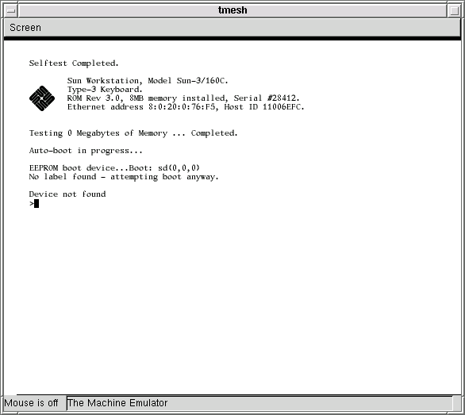
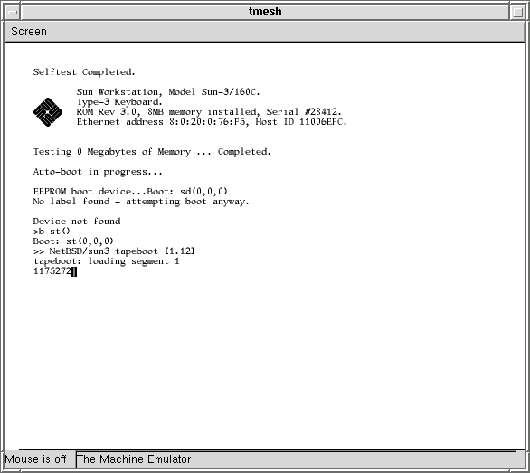
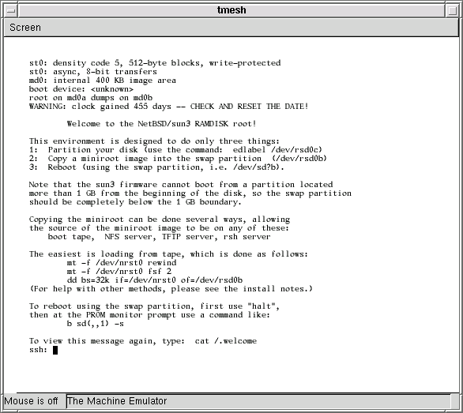

Warning: This is alpha-quality software. Don't count on it for anything. Use it at your own risk.
http://csail.mit.edu/~fredette/tme/sun3-carrera-rev-3.0.bin
If Sun asks me to stop distributing this ROM, I will.
In general, any working directory filename that begins with my- or MY- is a file that is specific to your individual emulated machine. With the exception of the disk image, these are mostly text files, and you are encouraged to edit many of them to suit yourself.
% mkdir /some/where/my-sun3 % cd /some/where/my-sun3
Now populate this directory:
% cp /usr/pkg/share/examples/tme/SUN3-CARRERA ./MY-SUN3This file contains tmesh commands that create a Sun 3/150. If you don't change this file, it creates a Sun 3/150 with a bwtwo framebuffer, a cgthree framebuffer, type-3 keyboard and mouse, one disk drive, one tape drive, and no network interface.
If you can't use the emulated framebuffers (because, for example, you aren't running X or didn't build tme with GTK), you must edit this file to disable the GTK-based display and enable the serial console instead. Comments in the MY-SUN3 file should explain how to do this.
% cp /some/where/sun3-carrera-rev-3.0.bin .
The tme-sun-idprom Perl script makes Sun IDPROM files. Before you can run it, you must choose an Ethernet address for your emulator - even if tme won't have access to the network. Ethernet addresses for Sun workstations always begin with 8:0:20, so pick three hexadecimal bytes XX:YY:ZZ such that 8:0:20:XX:YY:ZZ is not taken by any other machine on your LAN.
% tme-sun-idprom 3/150 8:0:20:XX:YY:ZZ > my-sun3-idprom.bin
The tme-sun-eeprom Perl script makes Sun EEPROM files from a text description. To get a basic text description for a Carrera system:
% cp /usr/pkg/share/examples/tme/sun3-carrera-eeprom.txt ./my-sun3-eeprom.txt
Most of the values should be left alone. However, if you are using a serial console, change console-device to ttya, and if you change the size of the ram0 memory in your MY-SUN3 file, you need to change the installed-#megs value to match.
For the curious, some more documentation for many of the values in this file can be found here.
Once you're satisfied with the contents of your my-sun3-eeprom.txt file, convert it into the binary EEPROM image:
% tme-sun-eeprom < my-sun3-eeprom.txt > my-sun3-eeprom.bin
% cp /usr/pkg/share/examples/tme/sun-keyboards.txt . % cp /usr/pkg/share/examples/tme/my-sun-macros.txt ./my-sun-macros.txtYou should not edit the sun-keyboards.txt file, however you may want to edit the my-sun-macros.txt file. The two files work together to transform key events on your keyboard into Sun type-3 scan codes.
The sun-keyboards.txt file lists all of the symbols (in X terminology, all of the "keysyms") on a Sun type-3 keyboard, and gives for each keysym a Sun type-3 scan code and some modifier information. Because Sun type-3 keyboards are never going to change, you shouldn't change this file, even if you think it lists keysyms that your keyboard doesn't have, like L1, R11, etc.
The my-sun-macros.txt file is meant to adapt your keyboard to the Sun type-3 keyboard. Any keysyms that the Sun type-3 keyboard has, that your keyboard doesn't have, can be generated by macros added to this file. For example, tmesh may complain that:
[/display0.0]: cannot generate keysym 'R9' directly, or through a macro: No such file or directoryThe odds are good that you don't care about generating the R9 key - it's one of the keysyms on the strange, original Sun numeric keypad. But if you absolutely must be able to generate the R9 key, you could add a line similar to the following to your my-sun-macros.txt file:
Alt_R F9 = R9Then, you could simulate pressing R9 by pressing the right Alt key and then the F9 key.
The my-sun-macros.txt that you copied from sun-macros.txt contains a small number of macros for generating the L1, L2, etc., keys. These macros should be sufficient for general use - simply ignore the tmesh warnings about other, obscure keysyms.
Under X, to learn about the keysyms present on your keyboard, the xmodmap -pk command will print out your current keyboard map. Alternately, the xev command may be a more convenient way to see what key combinations on your keyboard generate which keysyms.
% dd if=/dev/zero of=my-sun3-disk.img bs=1 count=1 seek=NNNNNNNNIt's not immediately wasteful to choose a very large disk size - this dd command will create a disk image that initially takes up almost zero real space on your host's disk. Only as the disk is populated will your host's operating system allocate more real space to the image.
Each segment of a tme virtual tape is really a regular file
on your host machine. Start by creating a new directory, under your
working directory, to hold the contents of this tape:
Making a virtual NetBSD tape
NetBSD installation on tme uses some classic tape procedures.
You will create a single virtual tape that boots the emulator into a
RAM disk kernel for labeling your virtual disk and copying a miniroot
to it, and this tape will also contain the NetBSD binary sets that the
miniroot will install onto the virtual disk.
% cd /some/where/my-sun3
% mkdir my-tape
% cd my-tape
Now download the NetBSD 1.6.2
official sun3 release. Please use a mirror
close to you.
The files you want to download and place in the my-tape directory are:
Now, your my-tape directory should have the following contents:
% ls base.tgz kern-GENERIC.tgz netbsd.RAMDISK.gz etc.tgz miniroot.fs.gz tapebootSince decompression is extremely slow on any Sun 3, it's best to decompress these files on the host:
% gzip -d *z % ls base.tar kern-GENERIC.tar netbsd.RAMDISK etc.tar miniroot.fs tapebootNow we will create the virtual tape. Although this isn't necessary, for convenience we will make numbered symlinks to these files. The numbers will correspond to positions, or segments, on the virtual tape, and we will then use those symlink names with tme:
% ln -s tapeboot ./01 % ln -s netbsd.RAMDISK ./02 % touch ./03 % ln -s miniroot.fs ./04 % ln -s base.tar ./05 % ln -s etc.tar ./06 % ln -s kern-GENERIC.tar ./07Create additional symlinks for any additional binary sets that you downloaded and want to install.
(Note that tape segment three is empty. On a real NetBSD boot tape, it would be the RAMDISK kernel for sun3x systems.)
% cd /some/where/my-sun3
The emulator itself is called tmesh. tmesh is a
shell for running commands that create and control emulated machines.
One day, you will be able to create and manage a whole set
of emulated machines running inside the same tmesh process,
but for now it's only been tested to handle one machine.
tmesh takes one argument on its command line: the name of a
text file containing initial commands for it to execute. In this
case, MY-SUN3 contains commands to assemble a Sun 3/150.
Two new, rather blank GTK windows should appear on your screen. If you
see any error messages, hopefully they're descriptive enough to help
you figure out what went wrong. Usually, the first error listed is
the real problem; when a central element of the emulated Sun 3/150
can't be created, many subsequent errors will be generated because all
of the attachments to that central element also fail.
If you don't see any error messages, at this tmesh>
prompt, give the ls command. This should give the following
output:
If the output contains all of these entries, the next step is to
load the virtual tape into the tape drive (be sure to add any additional
tape segments corresponding to additional binary sets that you want
to install):

At the end of the output, the single > is the Sun PROM
monitor prompt. The No label found error is normal - the PROM
tried to automatically boot the virtual disk that you created earlier
with dd. Because the disk is empty, the blocks that normally
contain the disk label are undefined.
Now, tell the PROM to boot the tape. This is typed at the Sun PROM
> prompt, not at the tmesh> prompt:

Once the RAMDISK kernel has been loaded into memory, it starts booting.
After the RAMDISK kernel has booted, it will display
a welcome message and leave you at an ssh: (for "Simple
Shell") prompt:

Booting and using the NetBSD/sun3 RAMDISK kernel
Now that you have created the virtual tape, you must boot it. This will
run the NetBSD/sun3 RAMDISK kernel. This kernel has a very minimal
set of utilities that will allow you to label the virtual disk and copy
the miniroot to it.
% tmesh ./MY-SUN3
ignore any cannot generate keysym warnings
tmesh>
tmesh> ls
mainbus0: tme/machine/sun3 my-sun3-idprom.bin
cpu0 at mainbus0: tme/ic/m68020 fpu-type m68881 fpu-compliance unknown fpu-incomplete line-f
obio0 at mainbus0 obio: tme/generic/bus size 16MB
obmem0 at mainbus0 obmem: tme/generic/bus size 4GB
ram0 at obmem0 addr 0x0: tme/host/posix/memory ram 8MB
rom0 at obmem0 addr 0x0fef0000: tme/host/posix/memory rom sun3-carrera-rev-3.0.bin
zs0 at obio0 addr 0x020000 ipl 6: tme/machine/sun3/zs
zs1 at obio0 addr 0x000000 ipl 6: tme/machine/sun3/zs
eeprom0 at obio0 addr 0x040000: tme/host/posix/memory persistent my-sun3-eeprom.bin
clock0 at obio0 addr 0x060000: tme/machine/sun3/clock
obie0 csr at obio0 addr 0x0c0000 ipl 3: tme/machine/sun3/obie
obie0 memory at mainbus0
ie0 at obie0: tme/ic/i82586
bpf1 at ie0: tme/host/bsd/bpf delay 10000
kbd0 at zs1 channel A: tme/serial/keyboard type sun-type-3 macros my-sun-macros.txt map sun-keyboards.txt rate 20
ms0 at zs1 channel B: tme/serial/mouse type mousesystems-5
bwtwo0 at obmem0 addr 0xff000000: tme/machine/sun3/bwtwo type old-onboard
console0 at zs0 channel A: tme/host/posix/serial device /dev/ttyr0 break-carats
vme0 addr 0x00000 at mainbus0 vme: tme/generic/bus size 4GB
si0 csr at vme0 addr 0xff200000 ipl 2: tme/machine/sun3/si type vme
ncr0 at si0: tme/ic/ncr5380
scsibus0 at ncr0: tme/scsi/bus
cgthree0 at vme0 addr 0xff400000 ipl 4: tme/machine/sun3/cgtwo type sun3
display0 at bwtwo0: tme/host/gtk/display
display0 at cgthree0
display0 at kbd0
display0 at ms0
sd0 at scsibus0: tme/scsi/disk id 0 type tme-scsi-1
disk0 at sd0: tme/host/posix/disk file my-sun3-disk.img
st0 at scsibus0: tme/scsi/tape id 4 type emulex-mt02 vendor EMULEX product MT-02 QIC
tape0 at st0: tme/host/posix/tape
tmesh> command tape0 load my-tape/01 my-tape/02 my-tape/03 my-tape/04 my-tape/05 my-tape/06 my-tape/07
tmesh> command mainbus0 power up
After a while (the Sun 3 PROM does a good power-on self-test), you should see
something like this:
> b st()
After a short delay, the PROM should begin booting the virtual tape:
ssh: mt -f /dev/nrst0 rewind
ssh: mt -f /dev/nrst0 fsf 3
ssh: dd bs=32k if=/dev/nrst0 of=/dev/rsd0b
ssh: halt
Booting the miniroot and running the install script
The next step is to boot the miniroot you copied to the swap partition
of your virtual disk, and run the install script it contains
to do the actual NetBSD installation.
> b sd(,,1) -s
WARNING: There is a bug in NetBSD/sun3 versions 1.6, 1.6.1,
1.6.2, and 2.0 that will cause a panic in the INSTALL kernel
if you attempt to configure the ie0 network interface. (This
is true even on a real Sun 3.) The bug does not affect the
GENERIC kernel, so to avoid the bug, just don't configure the
network during the install procedure. You can safely configure the
network after the system has been installed and you have changed the
kernel from INSTALL to GENERIC.
% echo 'command mainbus0 power up' >> MY-SUN3